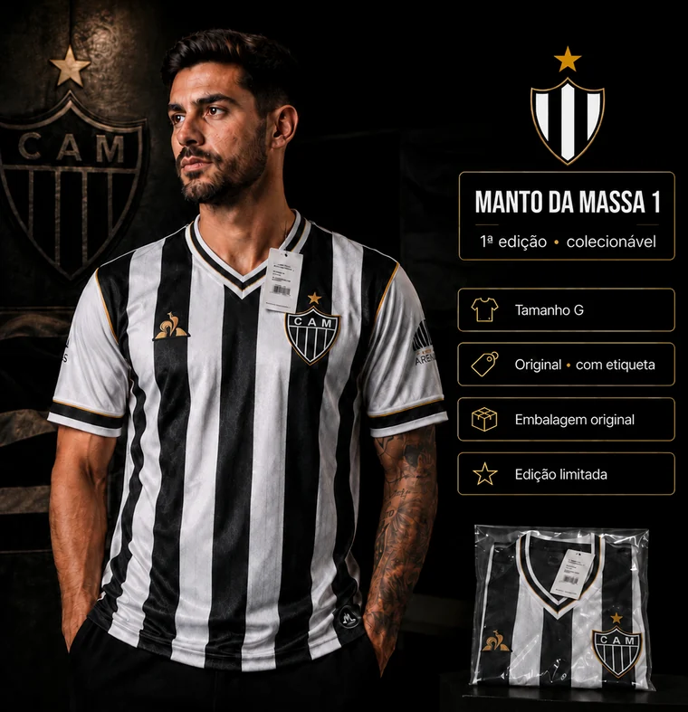
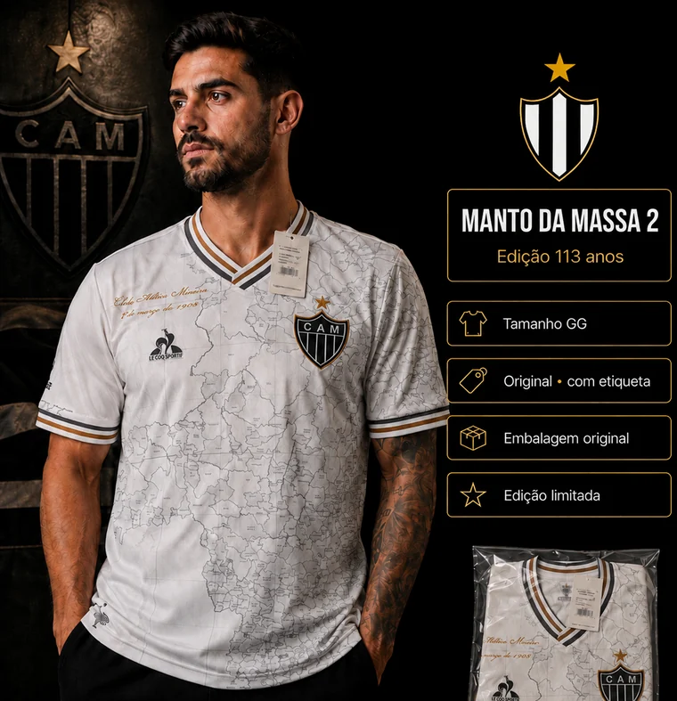
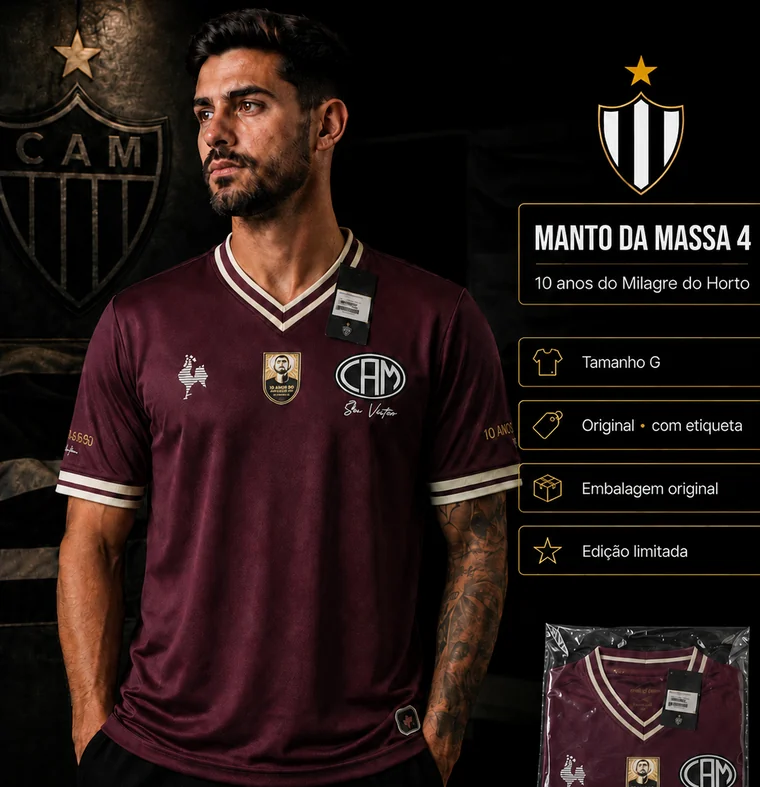
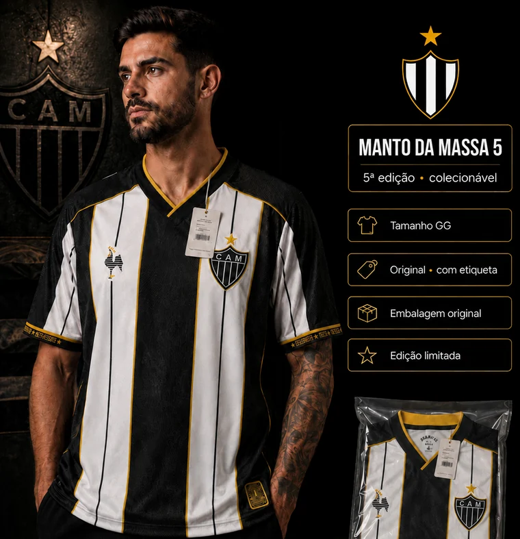
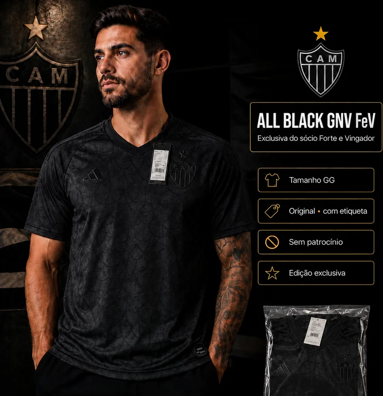
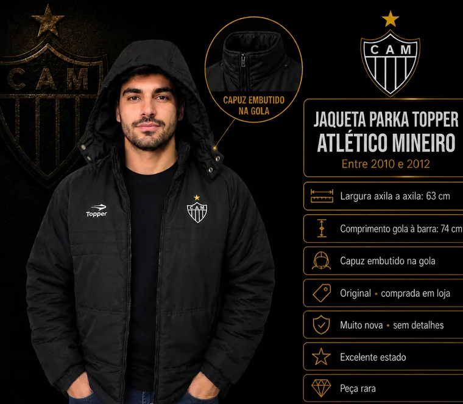

Manto da Massa 1
1ª edição · colecionável
Tamanho G · nunca usada · etiqueta e embalagem original
Uma história antes de ser uma venda
Existem coisas que a gente guarda não pelo valor material, mas pelas histórias que elas carregam. Esta página existe para contar uma delas.
Ler a história↓Capítulo um
Durante anos, guardei algumas peças especiais do Galo. Camisas de edições marcantes — os Mantos da Massa, a All Black exclusiva do sócio Forte e Vingador — todas novas, nunca usadas, ainda com etiqueta e embalagem original. E uma jaqueta Parka Topper da primeira passagem da marca pelo clube, entre 2010 e 2012, uma peça rara que hoje quase não se encontra.
Não foram compras por impulso. Cada uma marca uma fase da vida, um momento, uma lembrança de quem eu era quando ela chegou. Quem coleciona entende: a gente não guarda tecido, guarda tempo.
Não é um desapego fácil. Mas alguns capítulos só começam quando a gente aceita fechar outros.
Capítulo dois
Estou vivendo um momento de reconstrução profissional. Estou estruturando uma nova empresa, começando a atender os primeiros clientes e investindo na minha formação em Análise de Dados e Inteligência Artificial — a pós-graduação que preciso concluir para sustentar essa nova fase.
Foi aí que olhei para a coleção com outros olhos. Essas peças ficaram anos guardadas, protegidas, esperando algo. Percebi que o destino delas podia ser melhor do que uma prateleira: elas podem financiar o próximo capítulo da minha história — e começar um novo capítulo na história de quem as levar.
Quem ficar com uma dessas peças não estará apenas levando um item especial do Galo. Estará fazendo parte, de verdade, de um recomeço.
As peças
Cinco camisas novas, com etiqueta e embalagem original, e uma jaqueta rara em excelente estado. Deixo aqui apenas o essencial — fotos adicionais e medidas, é só me chamar.

1ª edição · colecionável
Tamanho G · nunca usada · etiqueta e embalagem original

Edição 113 anos
Tamanho GG · nunca usada · etiqueta e embalagem original

10 anos do Milagre do Horto
Tamanho G · nunca usada · etiqueta e embalagem original

5ª edição · colecionável
Tamanho GG · nunca usada · etiqueta e embalagem original

Exclusiva do sócio Forte e Vingador
Tamanho GG · nunca usada · sem patrocínio · edição exclusiva

Entre 2010 e 2012 · peça rara
63 cm axila a axila · 74 cm gola à barra · capuz embutido · excelente estado
Todas as peças são originais. As camisas nunca saíram da embalagem.
O que esta venda sustenta
A formação que estou retomando alimenta diretamente o trabalho que venho construindo: a Cultura Data-Driven, uma consultoria que ajuda empresas a transformar dados em decisões melhores — com a tecnologia adequada à realidade de cada negócio.
Cada peça vendida nesta página vira, literalmente, uma aula concluída.
Conhecer o projetoAo organizar estas peças, percebi que muitas coleções importantes vivem apenas em caixas, armários e na memória de quem as montou. Cada peça carrega data, origem, estado, documentos, histórias — e tudo isso se perde quando não é registrado.
Posso ajudar você a transformar sua coleção em um acervo digital organizado: um banco de dados estruturado e uma página própria para registrar, preservar e apresentar essa história.
Conversar sobre isso